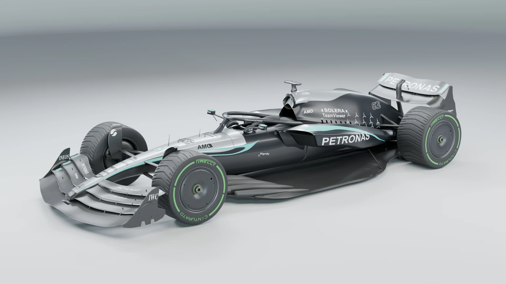
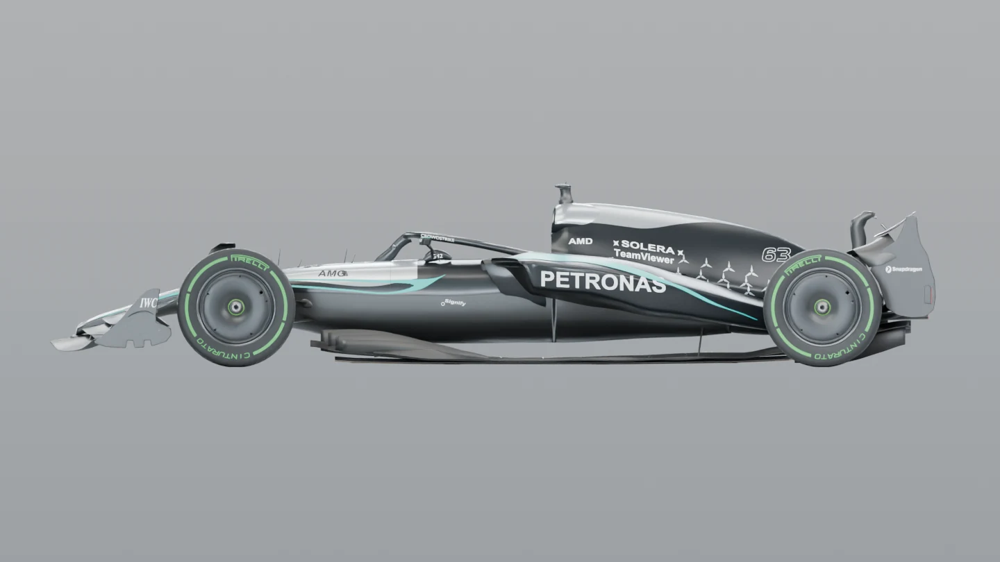
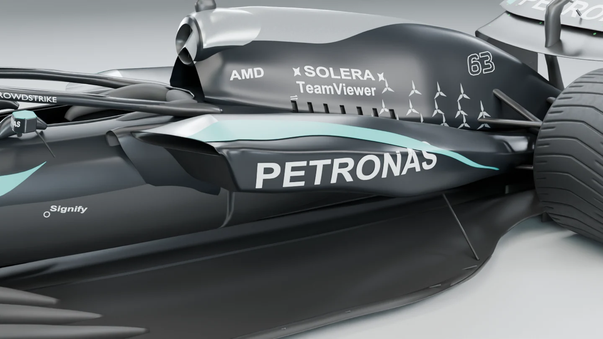
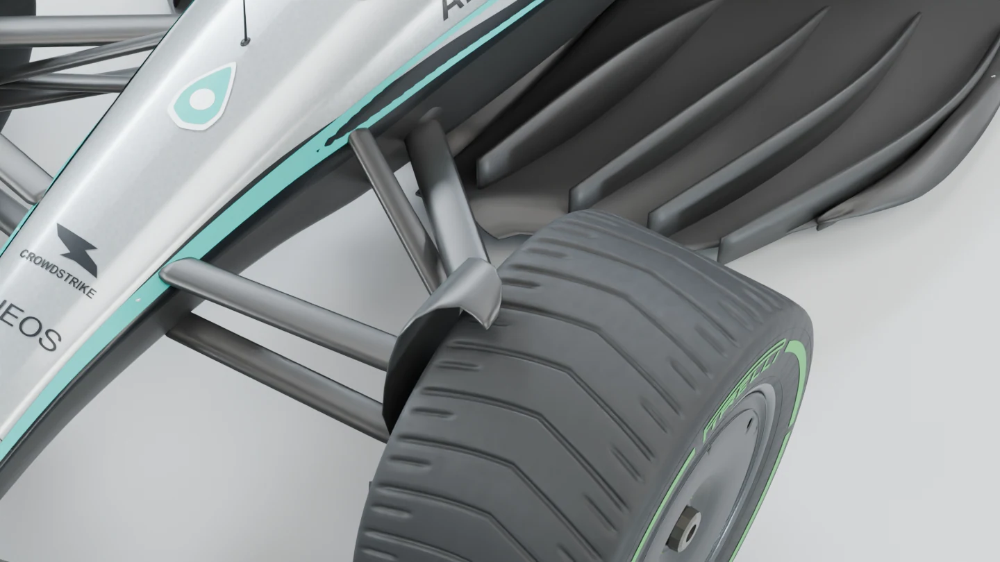
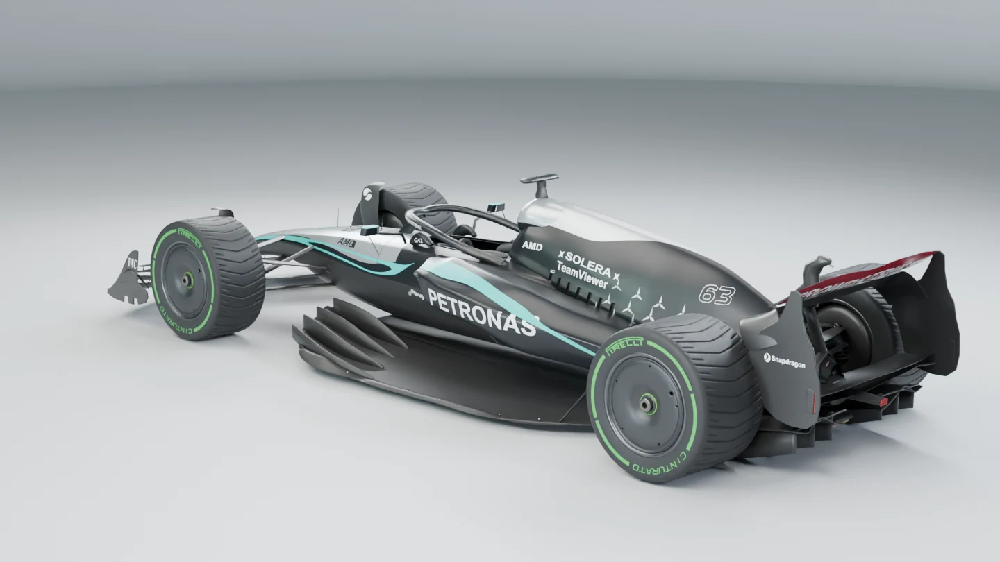

Le nez rejoint le premier profil
À Bahreïn en 2024, la fente passe sous le nez de la W15. Sur la W16 de Melbourne, le nez arrive jusqu’au plan principal de l’aileron et interrompt la fente au centre.
Formule 1 · Blender
Les explications se lisent avant de charger la voiture. Activez la 3D pour exporter un PNG ou partager un cadrage.
George Russell n° 63 et Kimi Antonelli n° 12 · Melbourne · 16 mars 2025
Les deux livrées reprennent les marquages observés à Melbourne.

Choisissez un composant pour déplacer la caméra. Les numéros sont des repères sur la géométrie du modèle.
Dossier d’ingénierie
Mercedes revoit la circulation de l’air le long du plancher avec des entrées de ponton horizontale et verticale et un creusement plus marqué sous la carrosserie. Le train avant change de géométrie et la suspension conserve des poussoirs aux deux essieux.
George Russell termine troisième et Andrea Kimi Antonelli quatrième. Les deux livrées reprennent les pneus intermédiaires à flanc vert du départ à Melbourne. Les slicks de la W15 correspondent au départ sur piste sèche à Bahreïn.
Compte rendu de MercedesGalerie officielle de MelbourneClassement de la course
À Bahreïn en 2024, la fente passe sous le nez de la W15. Sur la W16 de Melbourne, le nez arrive jusqu’au plan principal de l’aileron et interrompt la fente au centre.
L’ouverture triangulaire observée sur la W15 de Bahreïn cède la place à deux zones d’admission, l’une horizontale sous la lèvre et l’autre verticale près du châssis.
Le creusement inférieur du ponton se prolonge davantage. Il se lit particulièrement en profil et en trois quarts avant dans le mode gris.
La biellette de direction rejoint le châssis plus bas sur la W16. Les bras, le poussoir et la biellette s’observent derrière la roue avant.
Présentation technique FIA · MelbourneAnalyse de Formula 1Photos du nez à Melbourne




Aligne la W15 et la W16 sur un essieu ou sur le repère du cockpit, puis examine leurs silhouettes et leurs composants au même grossissement.
Reconstitution à partir de photographies et de documents publics. Les distances affichées par le comparateur sont mesurées entre les deux modèles 3D. Les formes internes des conduits et les surfaces cachées du plancher restent estimées. Le DRS de la visionneuse illustre l’articulation du volet.